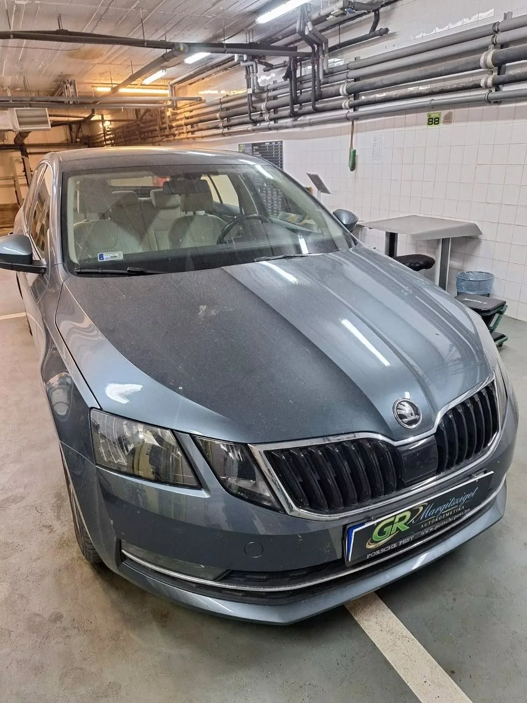

Standard
7 900Ft, kisautó, külső-belső
- Külső mosás és wax
- Porszívózás
- Belső ablaktisztítás
- Portalanítás

Autókozmetika a Margitszigeten
Kézi autómosás és autókozmetika fedett mélygarázsban. Három csomag, három autóméret, előre ismert árak.
Csomagok
Az árak a kisautók külső-belső takarítására vonatkoznak. Közepes és nagy autó, csak külső vagy csak belső: a teljes árlistán.
Standard
Plusz
Extra
Előtte és utána
Ugyanaz a Škoda, ugyanazon a helyen: munka előtt porosan, utána tisztán és fényesen. Minden képet mi készítettünk a saját munkáinkról.

 ElőtteUtána
ElőtteUtána
Így működik
Egyeztetünk, Ön leparkol nálunk, mi pedig dolgozunk, amíg a szigeten van.
Telefonon, e-mailben vagy Facebookon egyeztetünk napot és csomagot.
Átadja az autót, és mehet sétálni, futni vagy dolgozni a szigeten.
Szólunk, amikor kész. Az árat előre tudja, a helyszínen fizet.
Munkáink
Klasszikustól a mai prémiumig, mindegyiket ugyanazzal a gondossággal.


Bejelentkezés
Telefonon egyeztetünk napot, és megmondjuk a pontos árat az autójára.